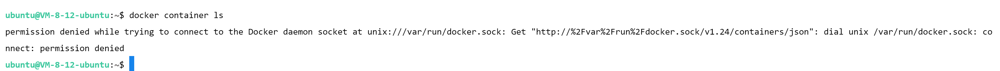
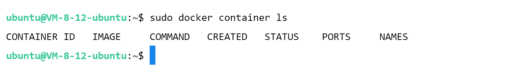
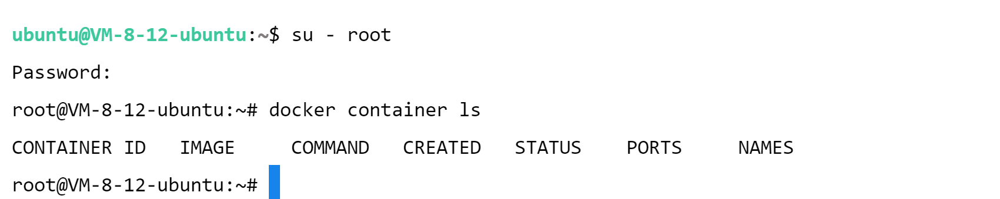
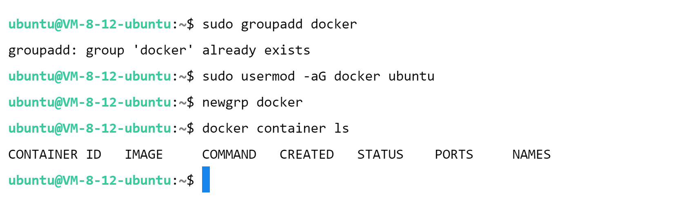

以普通用户运行Docker
以普通用户执行相关 Docker 命令，会提示：
1 | permission denied while trying to connect to the Docker daemon socket at unix:///var/run/docker.sock: Get "http://%2Fvar%2Frun%2Fdocker.sock/v1.24/containers/json": dial unix /var/run/docker.sock: connect: permission denied |

原因：https://docs.docker.com/engine/install/linux-postinstall/
解决方法：
- 使用
sudo获取 root 权限
1 | sudo xxx |

1 | su - root |

- 创建 docker 组并添加相关用户
- 创建 docker 组：
sudo groupadd docker - 将指定用户添加到 docker 组：
sudo usermod -aG docker $USER - 注销并重新登录，以便重新评估组成员身份（或激活对组的更改：
newgrp docker）
- 创建 docker 组：

本博客所有文章除特别声明外，均采用 CC BY-NC-SA 4.0 许可协议。转载请注明来自 梁嘉嘉の博客！